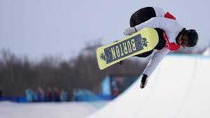
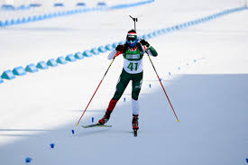
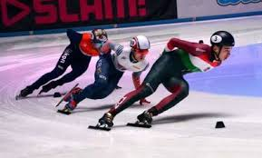

Snowboard

A snowboard, vagy hódeszka a szörf- és gördeszkázás téli alternatívájának indult az 1960-as években az Egyesült Államokban. Lényege a havas lejtőkön való egy deszkán történő lecsúszás, amely komoly egyensúlyérzéket és testkontrollt igényel.
Biatlon

A biatlon (vagy sílövészet) a sífutás és a lövészet kombinációjából álló téli sport, amely komoly állóképességet és koncentrációt igényel. A Magyar Biatlon Szövetség meghatározása szerint a sportág lényege a fizikai megterhelés és a precizitás közötti egyensúly.
Rövidpályás gyorskorcsolya

A rövidpályás gyorskorcsolya a 2026-os Milánó-Cortina téli olimpia aktuális versenyszáma, ahol több magyar sportoló, köztük Liu Shaoang, Nógrádi Bence, Végi Diána Laura és Somodi Maja is jégen van.